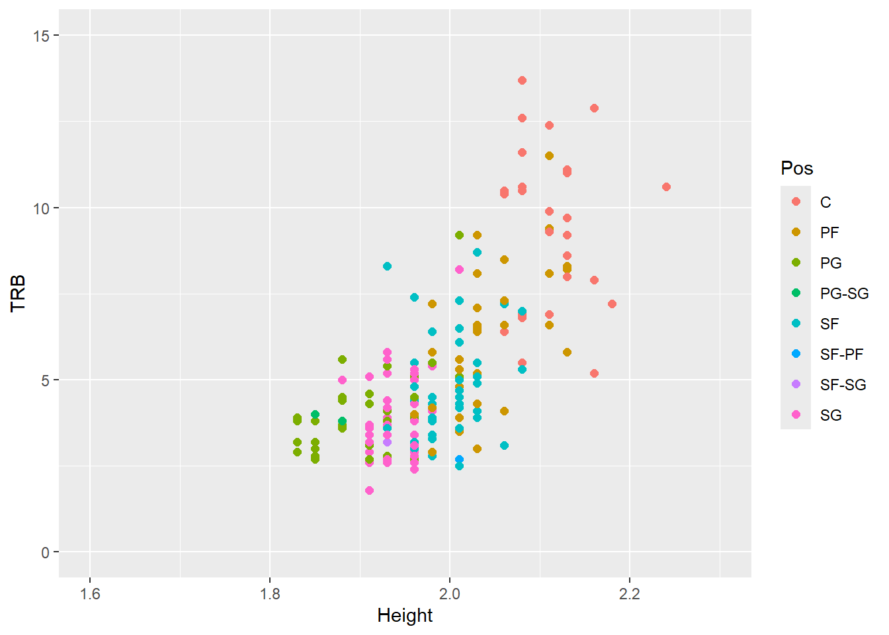
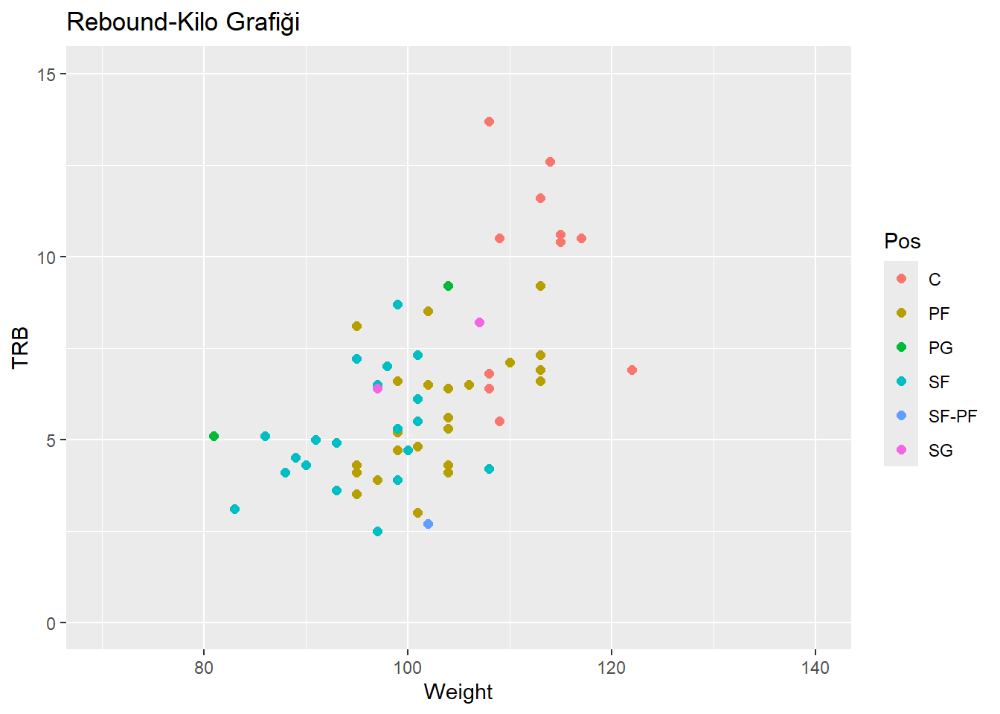
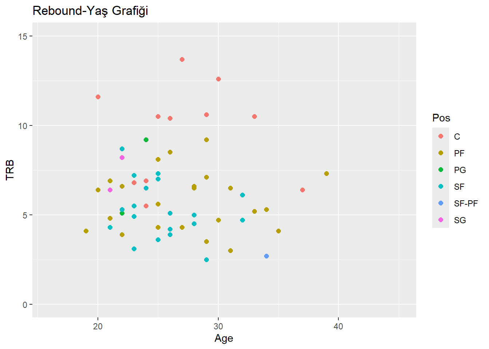

# Veri setini yükleme
veri <- read.csv(file = "NBA_Dataset_yeni.csv", head = TRUE, sep=",")
#veriyi TRB sütununa göre sıralama
rebounds_data <- veri[order(veri$TRB, decreasing = TRUE),]
#Player-TRB list
TRB <- rebounds_data[,c("Player", "TRB")]
#Player-Height list
Height <- rebounds_data[,c("Player", "Height")]
#Gerekli kütüphaneleri yükleme
library(ggplot2)
library(tidyverse)── Attaching core tidyverse packages ──────────────────────── tidyverse 2.0.0 ──
✔ dplyr 1.1.4 ✔ readr 2.1.5
✔ forcats 1.0.0 ✔ stringr 1.5.1
✔ lubridate 1.9.3 ✔ tibble 3.2.1
✔ purrr 1.0.2 ✔ tidyr 1.3.1
── Conflicts ────────────────────────────────────────── tidyverse_conflicts() ──
✖ dplyr::filter() masks stats::filter()
✖ dplyr::lag() masks stats::lag()
ℹ Use the conflicted package (<http://conflicted.r-lib.org/>) to force all conflicts to become errorslibrary(dslabs)
library(conflicted)
library(dplyr)
#Veri görselleştirme
veri %>% dplyr::filter(MP >0) %>% ggplot() + geom_point(aes(x = Height, y = TRB, color= Pos), size = 2)+ scale_x_continuous(limits = c(1.6, 2.3)) +scale_y_continuous(limits = c(0, 15))
#veriyi sadeleştirme
veri %>% dplyr::filter(MP >25) %>% ggplot() + geom_point(aes(x = Height, y = TRB, color =
Pos), size = 2, )+ scale_x_continuous(limits = c(1.6, 2.3)) +scale_y_continuous(limits = c(0, 15))
#outliers grupları filtreleme
veri %>% dplyr::filter(MP >25 & Height>2.0 & Height< 2.1) %>% ggplot() + geom_point(aes(x = Weight, y = TRB , color =Pos), size = 2)+ scale_x_continuous(limits = c(70, 140)) +scale_y_continuous(limits = c(0, 15))
veri %>% dplyr::filter(MP >25 & Height>2.0 & Height< 2.1) %>% ggplot() + geom_point(aes(x = Age, y = TRB , color =Pos), size = 2)+ scale_x_continuous(limits = c(16, 45)) +scale_y_continuous(limits = c(0, 15))